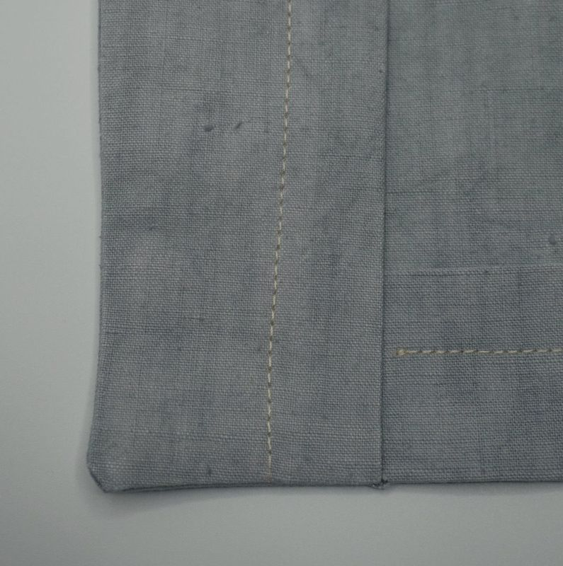

Saharienne : guide de couture et d’assemblage
Ce guide donne l’ordre de montage de la saharienne, de la découpe à l’assemblage des manches sur le buste. Il complète le Guide des options, qui explique les réglages de l’assistant. Faites toujours un essai en papier ou en tissu d’essai avant de couper le tissu définitif.
1. Découpe
Après la découpe des pièces, marquez soigneusement les repères :
- Devant gauche et devant droit. Pour ne pas vous retrouver avec deux devants gauches ou deux devants droits, posez les devants face à face, lignes de boutonnières et de boutons l’une contre l’autre. Placez les repères de boutonnières sur le devant gauche et ceux des boutons sur le devant droit (pour une saharienne femme, c’est l’inverse), puis marquez le devant de chaque pièce d’une marque distinctive.
- Les lignes de pli du bas, devant et dos, les parementures et les manchettes.
- L’emplacement des poches, à votre choix et à vos dimensions.
- Les pinces du dos.
- Les repères de haut et de bas d’emmanchure sur Manche 1 et Manche 2.
- Un repère de milieu sur le col, à l’emplacement du pli central, sur la ligne du bas (la moins courbe).
- Sur la pièce du devant, le repère haut de la patte de boutonnage.
2. Surfilage
Le surfilage n’est pas obligatoire, mais il renforce les coutures et donne un fini soigné. Surfilez :
- Manches 1 et 2 : tous les côtés, sauf le bas, côté manchettes.
- Parementure : tous les côtés, sauf le côté du pli.
- Dos : tous les côtés, sauf le bas, côté pli.
- Devant : tous les côtés, sauf le bas côté pli et le côté boutonnières.
Les autres pièces ne se surfilent pas.
3. Thermocollage
- Le devant thermocollant se pose sur le devant.
- Le col thermocollant se pose sur la pièce du col qui reste visible une fois le col en place et replié. Si vous utilisez deux tissus pour le col, le thermocollant va sur le tissu visible.
4. Couture et assemblage
Plis et petites pièces
- Cousez le premier pli du bas des pièces Devant et Dos : pli du bas à 2 cm, couture à 1,5 cm.
- Cousez le pli des manchettes (pli à 2 cm, couture à 1,5 cm), puis assemblez les manchettes, les côtés (a) ensemble, les côtés (b) ensemble.
- Assemblez le col sur trois côtés en laissant le bas libre, puis retournez-le. Une surpiqûre sur les trois côtés améliore le rendu.
Manches
- Assembler les pièces de manche. Pour ne pas vous retrouver avec deux manches droites ou deux manches gauches, placez vos pièces face à face, en symétrie (tête de manche contre tête de manche).
- Si vous ajoutez une ou des poches de manche et/ou une cartouchière, c’est le moment : après, ce sera plus difficile.
- Assemblez d’abord un côté, surpiquez-le si vous le souhaitez, puis assemblez les deux autres côtés et surfilez-les. Le surfilage n’est pas obligatoire, mais il renforce la couture et donne un fini particulier.
- Assembler les manchettes aux manches. Vers l’intérieur si vous ajoutez des pattes de manche (endroit contre endroit, puis retournez). Sans pattes de manche, vers l’extérieur ou vers l’intérieur à votre choix ; envers contre envers pour des manchettes extérieures.
- Retournez les manchettes vers l’intérieur ou l’extérieur de la manche, puis cousez la manchette et la manche à une distance égale à la largeur de la manchette moins 0,5 ou 1 cm.
Dos
- Réalisez les pinces du dos.
Devant
- Positionnez vos poches (l’emplacement indiqué sur le patron est indicatif) et assemblez-les.
- Assemblez partiellement les parementures avec les devants en arrêtant la couture au repère haut de la patte de boutonnage.
- Retournez sur l’endroit et marquez bien le pli au fer. Pas de surpiqûre pour l’instant : si vous en voulez une, faites-la après l’assemblage du col.
- Réalisez les boutonnières.
Devant et dos : le buste
- Assemblez le dos avec le devant droit et le devant gauche.
- Si vous avez prévu une surpiqûre, surpiquez la couture d’épaule et les coutures de côté, vers le dos.
- Marquez bien au fer le pli du bas.
- Rentrez sous les parementures les « languettes » qui dépassent du pli des pièces de devant.
- Cousez le bas des pièces entre 3 cm et 3,5 cm (la largeur du pli étant de 4 cm).


Buste et col
- Pour éviter toute confusion, le plus simple est de regarder une vidéo explicative très claire : assembler le col (à partir de la 3e minute).
- Le col étant assemblé, vous pouvez finir la couture de la parementure avec le devant.
- Retournez à l’endroit : le col, ainsi que l’assemblage du devant et de la parementure, sont terminés.
Buste et manches
C’est un assemblage de manches standard, que de nombreuses vidéos expliquent en ligne. Le point critique est d’éviter la confusion entre manche droite et manche gauche.
- Le buste posé à plat, endroit visible, positionnez les manches et marquez-les d’un signe distinctif (par exemple D et G).
- Placez le buste retourné sur l’envers, la patte de boutonnage face à vous.
- Présentez les manches en les glissant par l’intérieur et fixez la ligne de couture avec des épingles. Respectez les repères : haut de manche sur la couture d’épaule, bas de manche sur la couture dos-devant.
- Cousez, puis retournez et vérifiez vos coutures. S’il se trouve des plis, reprenez la couture aux endroits concernés.
- Repassez le pli vers le côté buste et surpiquez, si vous le souhaitez, vers le côté buste.
Les noms des pièces (Devant, Dos, Col, Parementure, Manche 1 et 2, Manchette 1 et 2) sont ceux du PDF téléchargé.